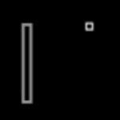

Go Back!

A clean and responsive port of the classic Pong, reimagined for the Nintendo 3DS. This homebrew version stays true to the original's minimalist charm while utilizing the
3DS's unique input and screen layout. Features include smooth paddle controls, and a polished retro aesthetic. A timeless game, rebuilt to fit in your pocket.
Download .3dsx